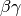
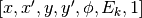
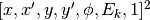

State Class¶
-
class
State(object)¶ FLAME beam state class for Python API.
Attributes - reference beam
posz position [m] ref_betaLorentz [1]
ref_bgLorentz  [1] ref_gammaLorentz [1]
ref_IonEkKinetic energy [eV/u] ref_IonEsNucleon mass [eV/u] ref_IonQMacro weight [1] ref_IonWTotal energy [eV/u] ref_IonZCharge to mass ratio [1] ref_phisAbsolute phase [rad] ref_SampleIonKPhase speed [rad] last_caviphi0Driven phase of the last rf cavity [deg] transmatTransfer matrix of the last element Attributes - actual beam
betaLorentz bgLorentz [1] gammaLorentz IonEkKinetic energy [eV/u] IonEsNucleon mass [eV/u] IonQMacro weight [1] IonWTotal energy [eV/u] IonZCharge to mass ratio [1] phisAbsolute phase [rad] SampleIonKPhase speed [rad] moment0Centroids of the all charge states. moment0_envWeighted average of centroids for the all charge states. moment0_rmsWeighted average of rms size for the all charge states. moment1Envelope matrixes of the all charge states. moment1_envWeighted average of envelope matrixes for the all charge states.
pos¶float: z position of the reference beam. [m]
ref_beta¶float: Lorentz
ref_bg¶float: Lorentz of the reference beam. [1]
ref_gamma¶float: Lorentz
ref_IonEk¶float: Kinetic energy of the reference beam. [eV/u]
ref_IonEs¶float: Nucleon mass of the reference beam. [eV/u]
ref_IonQ¶float: Macro weight of the reference beam. [1]
ref_IonW¶float: Total energy of the reference beam. [eV/u]
ref_IonZ¶float: Charge to mass ratio of the reference beam. [1]
ref_phis¶float: Absolute synchrotron phase of the reference beam. [rad]
ref_SampleIonK¶float: Phase speed of the reference beam. [rad]
last_caviphi0¶float: Driven phase of the last rf cavity. [deg]
transmat¶list of matrix[7,7]: Transfer matrix of the last element. This matrix is applied to moment0 and moment1 directly.
beta¶list of float: Lorentz
bg¶list of float: Lorentz of the all charge states. [1]
gamma¶list of float: Lorentz
IonEk¶list of float: Kinetic energy of the all charge states. [eV/u]
IonEs¶list of float: Nucleon mass of the all charge states. [eV/u]
IonQ¶list of float: Macro weight of the all charge states. [1]
IonW¶list of float: Total energy of the all charge states. [eV/u]
IonZ¶list of float: Charge to mass ratio of the all charge states. [1]
phis¶list of float: Absolute synchrotron phase of the all charge states. [rad]
SampleIonK¶list of float: Phase speed of the all charge states. [rad]
moment0¶Centroids of the all charge states.
list of vector[7]:  with [mm, rad, mm, rad, rad, MeV/u, 1].
moment0_env¶Weighted average of centroids for all charge states.
vector[7]: with [mm, rad, mm, rad, rad, MeV/u, 1].
moment0_rms¶Weighted average of rms beam envelopes (2nd order moments) for the all charge states.
vector[7]: rms of with [mm, rad, mm, rad, rad, MeV/u, 1].
moment1¶Envelope matrixes of the all charge states.
list of matrix[7,7]:
Cartisan product of  with [mm, rad, mm, rad, rad, MeV/u, 1] .
moment1_env¶Weighted average of envelope matrixes for the all charge states.
matrix[7,7]:
Cartisan product of with [mm, rad, mm, rad, rad, MeV/u, 1] .